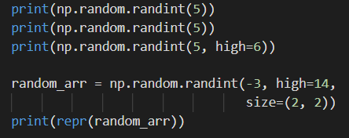

Similar to the Python rondommodule, NumPy has its own submodule for pseudo-random number generation called
np.rondomIt provides all the necessary randomized operations and extends it to multi-dimensional arrays. To generate pseudo-random integers, we use the
np.random.randint
function.

The np.rondom.randint
function takes in a single required argument, which actually depends on the
high
keyword argument. If
high=None
(which is the default value), then the required argument represents the upper (exclusive) end of the range, with the lower end being 0. Specifically, if the required argument is n,then the random integer is chosen uniformly from the range [0,n)
If highis not Nonethen the required argument will represent the lower (inclusive) end of the range, while high represents the upper (exclusive) end.
The sizekeyword argument specifies the size of the output array, where each integer in the array is randomly drawn from the specified range. As a default, np.rondom.randint returns a single integer.
Utility Function
Some fundamental utility functions from the np.rondom module are
, which allows us to control the outputs of the pseudo-random functions. The function takes in a single integer as an argument, representing the random seed.
The code below uses
np.random.seed
with the same random seed. Note how the outputs of the random functions in each subsequent run are identical when we set the same random seed.
The
np.random.shuffle
function allows us to randomly shuffle an array. Note that the shuffling happens in place (i.e. no return value), and shuffling multi-dimensional arrays only shuffles the first dimension.
The code below shows example usages of
np.random.shuffle
Note that only the rows of
matrix
are shuffled (i.e. shuffling along first dimension only).
Distribution
Using
np.random
we can also draw samples from probability distributions. For example we can use
actually has no required arguments. The keyword arguments,
low
and
high
, represent the inclusive lower end and exclusive upper end from which to draw random samples. Since they have default values of 0.0 and 1.0, respectively, the default outputs of
np.random.uniform
come from the range [0.0, 1.0).
The
size
keyword argument is the same as the one for
np.rondom.randint
, i.e. it represents the output size of the array.